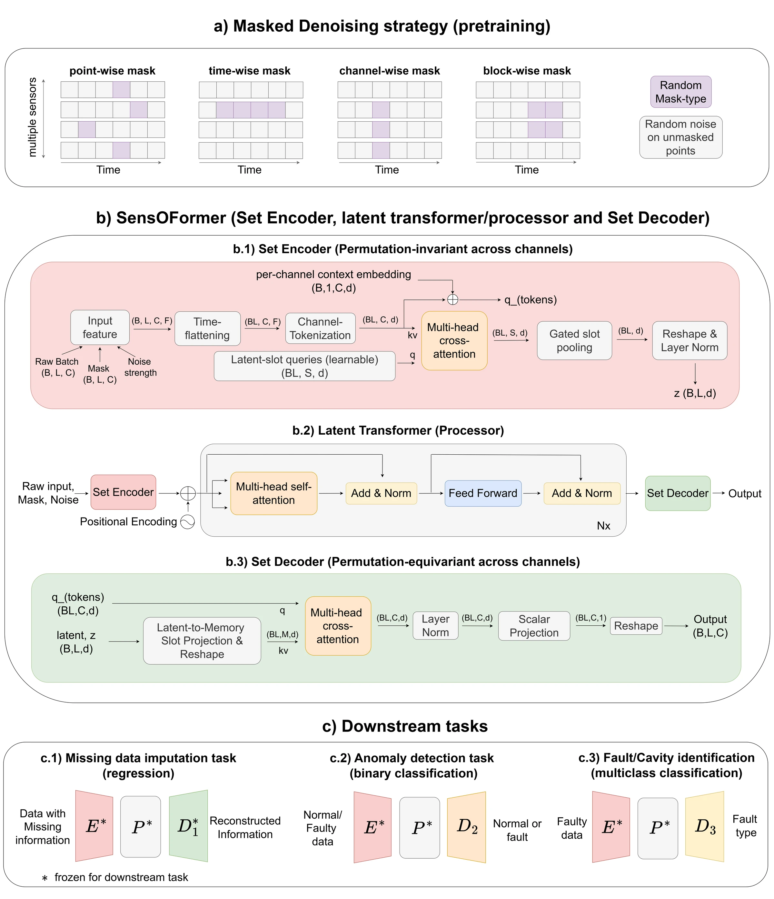
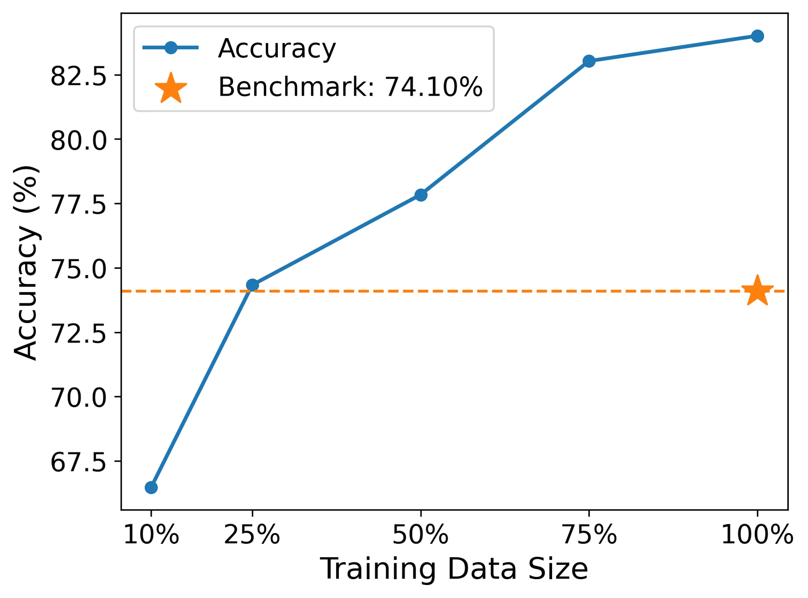
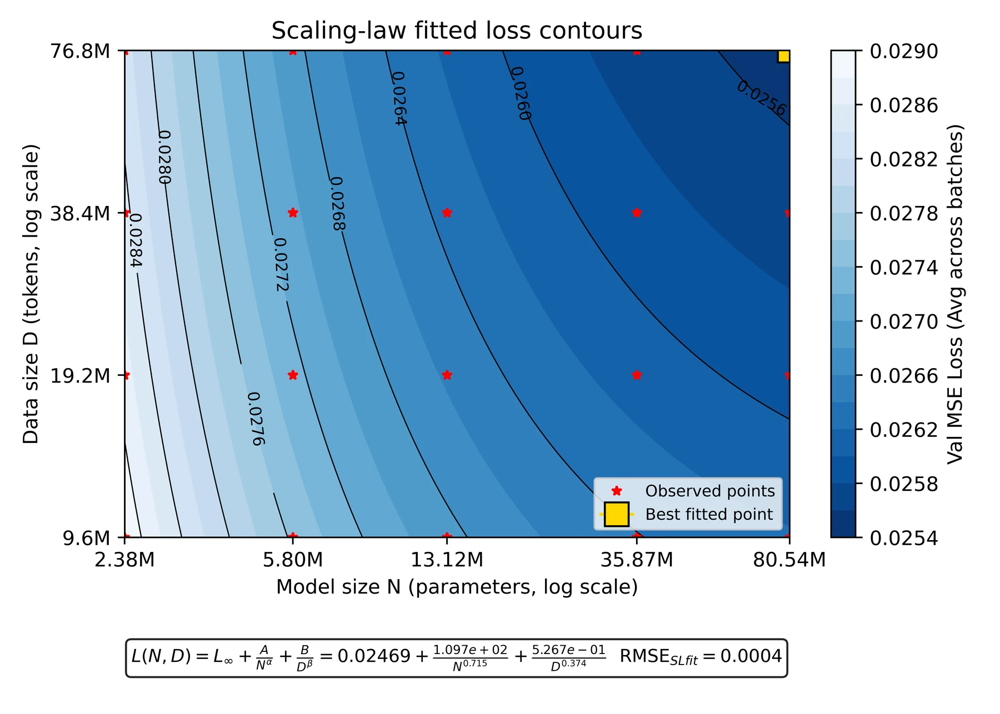

01
Corrupt
Sample realistic point-wise, time-wise, channel-wise, or block-wise gaps, then add noise to visible measurements.
NeurIPS 2026
Learning reusable representations from heterogeneous operational telemetry across facilities, sensors, and tasks.
Los Alamos National Laboratory
Particle accelerators produce vast streams of noisy, incomplete, and asynchronous sensor data. SensOFormer turns that operational history into a shared model that can transfer across facilities and diagnostic tasks.
Unlike fixed-channel time-series models, SensOFormer treats the sensors observed at each time step as a set. A Perceiver-style encoder handles variable sensor availability and ordering, while a latent transformer learns temporal structure without requiring one global channel layout.
Masked denoising pretraining exposes the model to realistic point, time, channel, and block failures. The resulting backbone supports zero-shot missing-data reconstruction and lightweight supervised adaptation for anomaly and fault diagnosis.
SensOFormer combines set-based channel processing with temporal attention, so the model can learn across facilities with different sensors, sampling structures, and sequence lengths.

01
Sample realistic point-wise, time-wise, channel-wise, or block-wise gaps, then add noise to visible measurements.
02
Encode unordered channel observations into a compact latent sequence and model temporal dependencies with a transformer.
03
Reuse the pretrained backbone for reconstruction, binary anomaly detection, and multiclass fault or cavity identification.
The same pretrained representation improves reconstruction, matches a specialized early-fault ensemble, and raises fault-identification accuracy while using fewer labels.
The largest SensOFormer variant records the lowest error in 21 of 24 dataset–mask combinations; the second-largest wins the remaining three.
SensOFormer-XTi passes 20 of 21 induced HVCM early-fault tests, matching the hierarchical voting ensemble.
Accuracy rises from the prior 74.10% benchmark to 84.01% on CEBAF superconducting RF fault types.


Recover isolated measurements, missing intervals, unavailable channels, and structured gaps.
Identify faulty HVCM power-electronics behavior from multichannel waveforms.
Locate the first faulting cavity in tightly coupled CEBAF cryomodules.
Distinguish fault types with a frozen backbone and lightweight task head.
Pretraining spans operational measurements from five major accelerator facilities and sensor formats ranging from short RF fault events to long beam-loss sequences.
Operational telemetry
1–1,754 channels
Beam-loss monitoring
66 channels
HVCM waveforms
12 channels
RF station signals
9 channels
Superconducting RF events
192 time steps
@inproceedings{rautela2026foundation,
title = {Foundation Models for Particle Accelerators},
author = {Rautela, Mahindra Singh and Scheinker, Alexander},
booktitle = {Advances in Neural Information Processing Systems},
year = {2026}
}